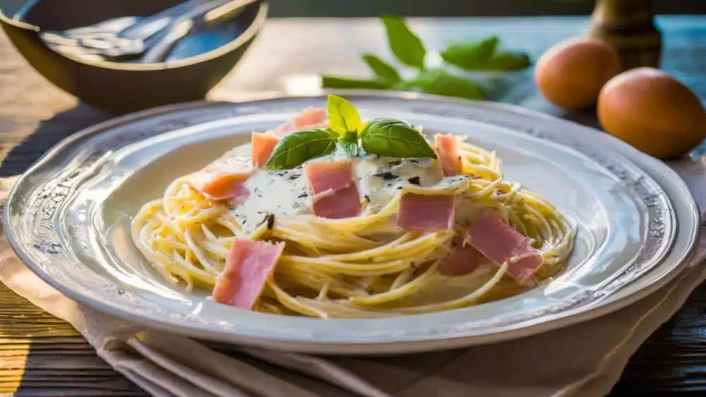

White Spaghetti

Description
The white Spaghetti its a pasta dish defined by its simplicity. This dish has
a soft and creamy sauce mostly made from cream, butter, garlic and parmesian cheese.
Ingridients
- 350gr of Spaghetti
- 2 tablespoon of butter
- 1 cup of single cream
- 1/2 cup of shredder parmesian cheese
- Chopped parsley
Steps
- In a pot with salt and water, cook the Spaghetti
- Chop the garlic
- Melt the butter, in a pan, and add the chopped garlic
- Add the cheese and stir until it melts
- Strain the Spaghetti
- Add the Spaghetti to the mix
- Add salt and pepper, at taste.
- Stir and wait a couple of minutes
- Finally serve it and sprinkle some parsley